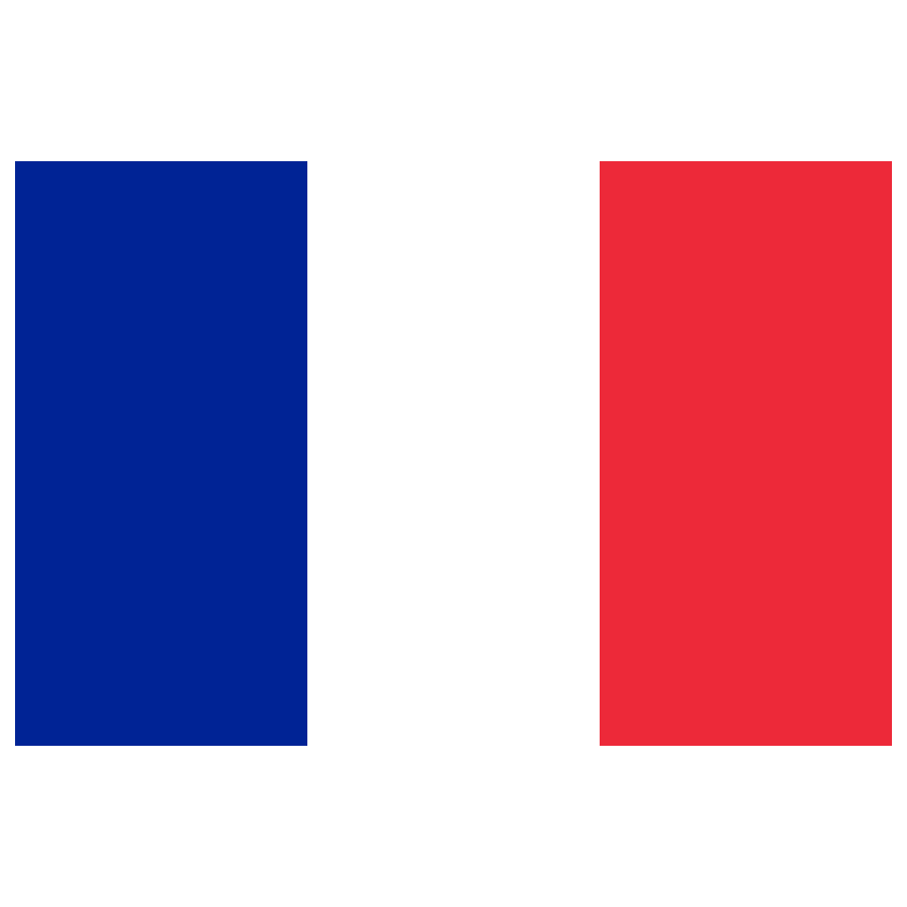

<ion-header class="ion-no-border">
  <ion-toolbar class="wrapper">
    <ion-item lines="none">
      <ion-fab-button size="small" id="language">
        <ion-icon name="language-outline" color="tertiary"></ion-icon>
      </ion-fab-button>
      <ion-label color="light">
        <ion-title>{{name}}</ion-title>
      </ion-label>
      <ion-fab-button size="small" (click)="close()">
        <ion-icon name="close-outline" color="tertiary"></ion-icon>
      </ion-fab-button>
    </ion-item>
  </ion-toolbar>
</ion-header>
<ion-content class="ion-padding">
  <!-- Spinner shown during data loading -->
  <ion-spinner *ngIf="isLoading" name="crescent" color="tertiary" class="center-spinner"></ion-spinner>
  <ion-button  expand="full" shape="round" color="tertiary" *ngIf="isEmpty === false" (click)="detail(id, first_wird.id)">
    <ion-icon  name="color-wand-outline" color="light"></ion-icon>
    <ion-text color="light"> {{ 'START_WIRD' | translate }}</ion-text>
  </ion-button>
  <!-- Message shown if the list is empty -->
  <ion-card *ngIf="!isLoading && isEmpty" class="empty-card">
    <ion-card-header class="empty-card-header">
      <ion-icon name="alert-circle-outline" color="medium" class="empty-icon"></ion-icon>
      <ion-card-title class="empty-title">{{ 'NO_CONTENT' | translate }}</ion-card-title>
    </ion-card-header>
    <ion-card-content class="empty-card-content">
      <p class="empty-message">{{ 'EMPTY_LIST' | translate }}</p>
    </ion-card-content>
  </ion-card>

  <ion-list *ngIf="!isLoading && !isEmpty" [inset]="true">
    <ion-item *ngFor="let wird of wirds" [button]="true" detail="false" (click)="detail(id, wird.id)">
      <div class="unread-indicator-wrapper" slot="start">
        <ion-text class="arabic" color="primary">{{wird.numOrder}}</ion-text>
      </div>
      <ion-label>
        <strong> <ion-text class="arabic">{{wird.ar_name}}</ion-text> </strong><br />
        <ion-note color="medium" class="ion-text-wrap" *ngIf="currentLanguage === 'fr'">{{wird.fr_name}}</ion-note>
        <ion-note color="medium" class="ion-text-wrap" *ngIf="currentLanguage === 'en'">{{wird.en_name}}</ion-note>
        <ion-note color="medium" class="ion-text-wrap" *ngIf="currentLanguage === 'ml'">{{wird.ml_name}}</ion-note>
      </ion-label>
      <div class="metadata-end-wrapper" slot="end">
        <ion-note color="dark">{{wird.total}} fois</ion-note>
        <ion-icon color="dark" name="chevron-forward"></ion-icon>
      </div>
      <br><br>
    </ion-item>
    <br>
  </ion-list>
  <br><br><br>

  <ion-modal #modal trigger="language" [initialBreakpoint]="0.5" [breakpoints]="[0, 0.25, 0.5, 0.75]">
    <ng-template>
      <ion-header>
        <ion-toolbar color="tertiary">
          <br>
          <ion-title>{{ 'LANG' | translate }}</ion-title>
        </ion-toolbar>
      </ion-header>
      <ion-content class="ion-padding" color="light">
        <ion-item>
          <ion-select aria-label="Langues" interface="popover" [(ngModel)]="language" placeholder="{{ 'LANG' | translate }}"
            (ionChange)="languageInput($event)">

            <ion-select-option value="fr">
               {{ 'FR' | translate }}
            </ion-select-option>

            <ion-select-option value="en">
               {{ 'EN' | translate }}
            </ion-select-option>

            <ion-select-option value="ml">
               {{ 'ML' | translate }}
            </ion-select-option>
            <ion-select-option value="ar">
               {{ 'AR' | translate }}
            </ion-select-option>
          </ion-select>
        </ion-item>
      </ion-content>
    </ng-template>
  </ion-modal>
</ion-content>
